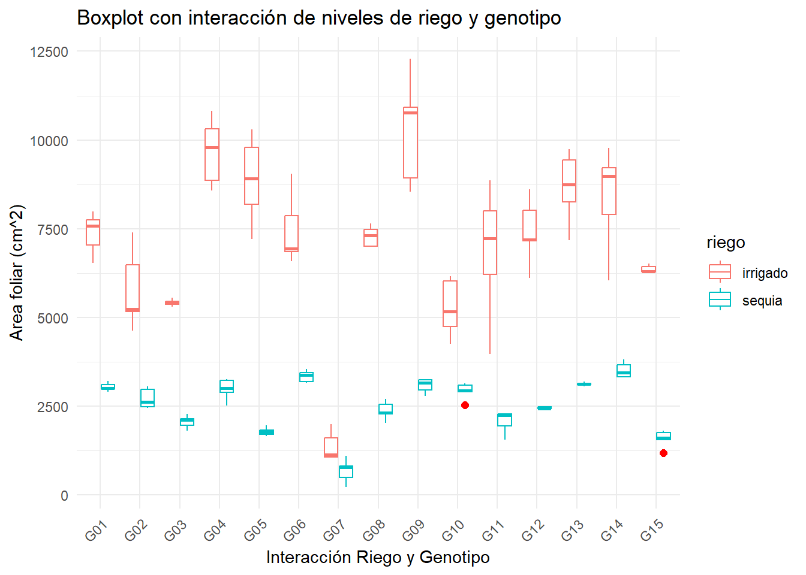
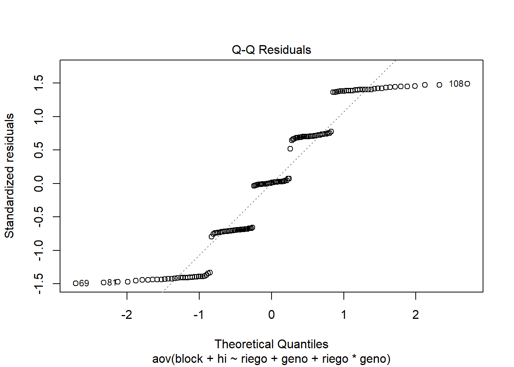

Quarto enables you to weave together content and executable code into a finished document. To learn more about Quarto see https://quarto.org.
1.1 Running Code
When you click the Render button a document will be generated that includes both content and the output of embedded code. You can embed code like this:
{r} 1 + 1
You can add options to executable code like this
{r} #| echo: false 2 * 2
The echo: false option disables the printing of code (only output is displayed).
2 como usar quarto?
2.1 fuentes
negrita: esto es fuente negrita
cursiva: solanum tuberosum
2.2 formulas matematicas
Area de una circunferencia \(Area_{circunferencia}=pi.r^2\)
esta es una formula cualquiera \[k=\frac{\left(2x-1\right)^2-1}{4}"\]
3 Mi primera pagina web
Tener mi proyecto
Conectar mi proyecto a GitHub
Tener un archivo en formato html llamado ‘index.html’
Hacer push al repositorio
Activar GitHub Pages
4 Modelos lineales mixtos
4.1 Importar datos
source('https://inkaverse.com/setup.r')
ℹ The googlesheets4 package is using a cached token for 'ed.ns0nro@gmail.com'.
ℹ The googledrive package is using a cached token for 'ed.ns0nro@gmail.com'.
ggplot(fb, aes(x = geno, y = lfa, colour =riego)) +geom_boxplot(outlier.colour ="red", outlier.shape =16, outlier.size =2) +labs(title ="Boxplot con interacción de niveles de riego y genotipo", x ="Interacción Riego y Genotipo", y ="Area foliar (cm^2)") +theme_minimal() +theme(axis.text.x =element_text(angle =45, hjust =1)) # inclinar etiquetas del eje x

4.3 Modelo lineal: hi
modelo <-aov(formula = block + hi ~ riego + geno + riego*geno , data = fb)anova(modelo)## Analysis of Variance Table## ## Response: block + hi## Df Sum Sq Mean Sq F value Pr(>F)## riego 1 0.122 0.12176 0.0471 0.8286## geno 14 2.701 0.19291 0.0746 1.0000## riego:geno 14 0.078 0.00554 0.0021 1.0000## Residuals 120 310.402 2.58668plot(modelo)

4.4 Modelo lineal mixto para lfa
library(lme4)library(lmerTest)model <- lme4::lmer(lfa ~ riego + geno + riego*geno + (1|bloque), data = fb)anova(model)## Analysis of Variance Table## npar Sum Sq Mean Sq F value## riego 1 788556926 788556926 1433.796## geno 14 261729564 18694969 33.992## riego:geno 14 108147972 7724855 14.046plot(modelo)
ggplot(grupos, aes(x = geno, y = lfa, fill = riego)) +geom_bar(stat ="identity", position ="dodge", color ="black") +labs(x ="Genotipo", y ="LFA", fill ="Riego") +theme_minimal() +theme(axis.text.x =element_text(angle =45, hjust =1)) +ggtitle("Gráfico de barras: LFA por genotipo y riego") +geom_text(aes(label = groups, y = lfa +0.05), position =position_dodge(width =0.9), vjust =0)
6 enmeans: Comparación de medias
modelo <- lme4::lmer(hi ~ (1|bloque) + geno*riego , data = fb)anova(modelo)## Analysis of Variance Table## npar Sum Sq Mean Sq F value## geno 14 2.70077 0.192912 59.9161## riego 1 0.12176 0.121758 37.8165## geno:riego 14 0.07762 0.005544 1.7219source('https://inkaverse.com/setup.r')library(emmeans)library(multcomp)library(multcompView)library(lme4)library(lmerTest)cm1 <-emmeans(modelo, ~ geno | riego) %>%cld(Letters = letters, reversed = T)cm1## riego = irrigado:## geno emmean SE df lower.CL upper.CL .group ## G07 0.749 0.0278 65.8 0.6938 0.805 a ## G15 0.680 0.0278 65.8 0.6248 0.736 ab ## G11 0.645 0.0278 65.8 0.5898 0.701 abc ## G03 0.625 0.0278 65.8 0.5695 0.681 abc ## G09 0.605 0.0278 65.8 0.5490 0.660 bcd ## G05 0.580 0.0278 65.8 0.5249 0.636 bcde ## G10 0.555 0.0278 65.8 0.4993 0.610 cdef ## G04 0.546 0.0278 65.8 0.4903 0.601 cdefg ## G12 0.498 0.0278 65.8 0.4427 0.554 defg ## G01 0.472 0.0278 65.8 0.4168 0.528 efgh ## G02 0.455 0.0278 65.8 0.3995 0.511 fgh ## G14 0.436 0.0278 65.8 0.3807 0.492 fgh ## G08 0.429 0.0278 65.8 0.3735 0.485 gh ## G13 0.350 0.0278 65.8 0.2946 0.406 h ## G06 0.221 0.0278 65.8 0.1653 0.276 i## ## riego = sequia:## geno emmean SE df lower.CL upper.CL .group ## G07 0.689 0.0278 65.8 0.6335 0.745 a ## G11 0.665 0.0278 65.8 0.6097 0.721 a ## G03 0.593 0.0278 65.8 0.5371 0.648 ab ## G15 0.590 0.0278 65.8 0.5340 0.645 ab ## G10 0.582 0.0278 65.8 0.5261 0.637 ab ## G09 0.511 0.0278 65.8 0.4556 0.567 bc ## G04 0.486 0.0278 65.8 0.4302 0.541 bc ## G05 0.446 0.0278 65.8 0.3908 0.502 cd ## G01 0.441 0.0278 65.8 0.3852 0.496 cd ## G02 0.402 0.0278 65.8 0.3467 0.458 cde ## G12 0.402 0.0278 65.8 0.3467 0.458 cde ## G14 0.389 0.0278 65.8 0.3335 0.445 cde ## G13 0.346 0.0278 65.8 0.2904 0.402 de ## G08 0.315 0.0278 65.8 0.2598 0.371 e ## G06 0.136 0.0278 65.8 0.0807 0.192 f ## ## Degrees-of-freedom method: kenward-roger ## Confidence level used: 0.95 ## P value adjustment: tukey method for comparing a family of 15 estimates ## significance level used: alpha = 0.05 ## NOTE: If two or more means share the same grouping symbol,## then we cannot show them to be different.## But we also did not show them to be the same.cm2 <-emmeans(modelo, ~ riego | geno) %>%cld(Letters = letters, reversed = T)cm2## geno = G01:## riego emmean SE df lower.CL upper.CL .group## irrigado 0.472 0.0278 65.8 0.4168 0.528 a ## sequia 0.441 0.0278 65.8 0.3852 0.496 a ## ## geno = G02:## riego emmean SE df lower.CL upper.CL .group## irrigado 0.455 0.0278 65.8 0.3995 0.511 a ## sequia 0.402 0.0278 65.8 0.3467 0.458 a ## ## geno = G03:## riego emmean SE df lower.CL upper.CL .group## irrigado 0.625 0.0278 65.8 0.5695 0.681 a ## sequia 0.593 0.0278 65.8 0.5371 0.648 a ## ## geno = G04:## riego emmean SE df lower.CL upper.CL .group## irrigado 0.546 0.0278 65.8 0.4903 0.601 a ## sequia 0.486 0.0278 65.8 0.4302 0.541 a ## ## geno = G05:## riego emmean SE df lower.CL upper.CL .group## irrigado 0.580 0.0278 65.8 0.5249 0.636 a ## sequia 0.446 0.0278 65.8 0.3908 0.502 b ## ## geno = G06:## riego emmean SE df lower.CL upper.CL .group## irrigado 0.221 0.0278 65.8 0.1653 0.276 a ## sequia 0.136 0.0278 65.8 0.0807 0.192 b ## ## geno = G07:## riego emmean SE df lower.CL upper.CL .group## irrigado 0.749 0.0278 65.8 0.6938 0.805 a ## sequia 0.689 0.0278 65.8 0.6335 0.745 a ## ## geno = G08:## riego emmean SE df lower.CL upper.CL .group## irrigado 0.429 0.0278 65.8 0.3735 0.485 a ## sequia 0.315 0.0278 65.8 0.2598 0.371 b ## ## geno = G09:## riego emmean SE df lower.CL upper.CL .group## irrigado 0.605 0.0278 65.8 0.5490 0.660 a ## sequia 0.511 0.0278 65.8 0.4556 0.567 b ## ## geno = G10:## riego emmean SE df lower.CL upper.CL .group## sequia 0.582 0.0278 65.8 0.5261 0.637 a ## irrigado 0.555 0.0278 65.8 0.4993 0.610 a ## ## geno = G11:## riego emmean SE df lower.CL upper.CL .group## sequia 0.665 0.0278 65.8 0.6097 0.721 a ## irrigado 0.645 0.0278 65.8 0.5898 0.701 a ## ## geno = G12:## riego emmean SE df lower.CL upper.CL .group## irrigado 0.498 0.0278 65.8 0.4427 0.554 a ## sequia 0.402 0.0278 65.8 0.3467 0.458 b ## ## geno = G13:## riego emmean SE df lower.CL upper.CL .group## irrigado 0.350 0.0278 65.8 0.2946 0.406 a ## sequia 0.346 0.0278 65.8 0.2904 0.402 a ## ## geno = G14:## riego emmean SE df lower.CL upper.CL .group## irrigado 0.436 0.0278 65.8 0.3807 0.492 a ## sequia 0.389 0.0278 65.8 0.3335 0.445 a ## ## geno = G15:## riego emmean SE df lower.CL upper.CL .group## irrigado 0.680 0.0278 65.8 0.6248 0.736 a ## sequia 0.590 0.0278 65.8 0.5340 0.645 b ## ## Degrees-of-freedom method: kenward-roger ## Confidence level used: 0.95 ## significance level used: alpha = 0.05 ## NOTE: If two or more means share the same grouping symbol,## then we cannot show them to be different.## But we also did not show them to be the same.cm3 <-emmeans(modelo, ~ riego * geno) %>%cld(Letters = letters, reversed = T)cm3## riego geno emmean SE df lower.CL upper.CL .group ## irrigado G07 0.749 0.0278 65.8 0.6938 0.805 a ## sequia G07 0.689 0.0278 65.8 0.6335 0.745 ab ## irrigado G15 0.680 0.0278 65.8 0.6248 0.736 abc ## sequia G11 0.665 0.0278 65.8 0.6097 0.721 abc ## irrigado G11 0.645 0.0278 65.8 0.5898 0.701 abcd ## irrigado G03 0.625 0.0278 65.8 0.5695 0.681 abcde ## irrigado G09 0.605 0.0278 65.8 0.5490 0.660 bcdef ## sequia G03 0.593 0.0278 65.8 0.5371 0.648 bcdefg ## sequia G15 0.590 0.0278 65.8 0.5340 0.645 bcdefg ## sequia G10 0.582 0.0278 65.8 0.5261 0.637 bcdefgh ## irrigado G05 0.580 0.0278 65.8 0.5249 0.636 bcdefgh ## irrigado G10 0.555 0.0278 65.8 0.4993 0.610 bcdefghi ## irrigado G04 0.546 0.0278 65.8 0.4903 0.601 cdefghi ## sequia G09 0.511 0.0278 65.8 0.4556 0.567 defghij ## irrigado G12 0.498 0.0278 65.8 0.4427 0.554 efghij ## sequia G04 0.486 0.0278 65.8 0.4302 0.541 fghijk ## irrigado G01 0.472 0.0278 65.8 0.4168 0.528 fghijkl ## irrigado G02 0.455 0.0278 65.8 0.3995 0.511 ghijkl ## sequia G05 0.446 0.0278 65.8 0.3908 0.502 hijklm ## sequia G01 0.441 0.0278 65.8 0.3852 0.496 ijklm ## irrigado G14 0.436 0.0278 65.8 0.3807 0.492 ijklm ## irrigado G08 0.429 0.0278 65.8 0.3735 0.485 ijklm ## sequia G02 0.402 0.0278 65.8 0.3467 0.458 jklm ## sequia G12 0.402 0.0278 65.8 0.3467 0.458 jklm ## sequia G14 0.389 0.0278 65.8 0.3335 0.445 jklm ## irrigado G13 0.350 0.0278 65.8 0.2946 0.406 klmn ## sequia G13 0.346 0.0278 65.8 0.2904 0.402 lmn ## sequia G08 0.315 0.0278 65.8 0.2598 0.371 mn ## irrigado G06 0.221 0.0278 65.8 0.1653 0.276 no## sequia G06 0.136 0.0278 65.8 0.0807 0.192 o## ## Degrees-of-freedom method: kenward-roger ## Confidence level used: 0.95 ## P value adjustment: tukey method for comparing a family of 30 estimates ## significance level used: alpha = 0.05 ## NOTE: If two or more means share the same grouping symbol,## then we cannot show them to be different.## But we also did not show them to be the same.
6.1 gráfico
dtcm <-as.data.frame(cm2) %>%rename(sig =".group")ggplot(dtcm, aes(x = geno, y = emmean, fill = riego)) +geom_bar(stat ="identity", position ="dodge", color ="black") +geom_text(aes(label = sig, y = emmean*1*1),position =position_dodge(width =0.9),vjust =0) +labs(x ="Genotipo", y ="HI", fill ="Riego") +theme_minimal() +theme(axis.text.x =element_text(angle =45, hjust =1)) +ggtitle("Gráfico de barras: LFA por genotipo y riego")